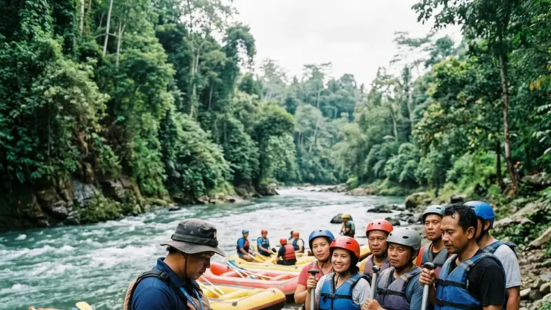

Operator river rafting yang aman dapat dikenali dari sertifikasi pemandu, kelengkapan alat keselamatan, dan ulasan positif dari peserta yang pernah menggunakan jasanya sebelumnya.
- Periksa status sertifikasi pemandu sebelum memesan trip
- Pastikan alat keselamatan seperti pelampung dan helm dalam kondisi layak pakai
- Baca ulasan peserta sebelumnya sebagai bahan pertimbangan
- Tanyakan prosedur evakuasi darurat yang dimiliki operator
- Bandingkan harga dengan fasilitas dan standar keselamatan yang ditawarkan
Bagaimana Cara Mengenali Operator River Rafting yang Aman?
Operator river rafting yang aman dapat dikenali melalui sertifikasi pemandu, kelengkapan alat keselamatan, dan transparansi prosedur operasional yang mereka miliki.
Pemandu bersertifikat umumnya telah melalui pelatihan penyelamatan air dan memahami cara membaca kondisi jeram sungai secara akurat, sehingga mampu mengambil keputusan cepat saat situasi darurat terjadi. Operator yang bertanggung jawab juga biasanya bersedia menjelaskan secara terbuka mengenai prosedur keselamatan, termasuk langkah evakuasi apabila terjadi insiden selama trip berlangsung.
Selain itu, operator yang kredibel umumnya memiliki jadwal pemeriksaan rutin terhadap kondisi perahu dan perlengkapan keselamatan sebelum digunakan oleh peserta.
Apakah Sertifikasi Pemandu Penting Diperiksa?
Sertifikasi pemandu penting diperiksa karena menjadi indikator utama kompetensi dalam menangani situasi darurat dan memandu peserta melewati jeram dengan aman.
Calon peserta dapat menanyakan langsung kepada operator mengenai latar belakang pelatihan pemandu, termasuk apakah mereka memiliki sertifikasi pertolongan pertama dan penyelamatan air yang diakui secara resmi.
Apa Saja Tanda Operator River Rafting Kurang Profesional?
Tanda operator river rafting kurang profesional meliputi minimnya briefing keselamatan, kondisi perlengkapan yang terlihat usang, dan kurangnya transparansi mengenai prosedur darurat.
Operator yang tidak memberikan briefing keselamatan secara memadai sebelum keberangkatan patut dicurigai karena mengabaikan salah satu prosedur dasar dalam aktivitas berisiko seperti river rafting. Kondisi pelampung yang robek, helm retak, atau perahu yang terlihat tidak terawat juga menjadi tanda bahwa operator kurang memperhatikan standar keselamatan.
Selain itu, operator yang enggan menjelaskan langkah evakuasi darurat ketika ditanya sebaiknya dihindari karena menunjukkan kurangnya kesiapan menghadapi situasi tak terduga di lapangan.
Apakah Ulasan Peserta Sebelumnya Bisa Dijadikan Acuan?
Ulasan peserta sebelumnya bisa dijadikan acuan yang berguna untuk menilai kualitas layanan, ketepatan waktu, dan tingkat profesionalisme operator river rafting.
Membaca ulasan dari berbagai sumber, bukan hanya dari satu platform, dapat memberikan gambaran yang lebih objektif mengenai pengalaman peserta lain, termasuk hal-hal teknis seperti kondisi perlengkapan dan sikap kru selama trip berlangsung.
Apakah Harga Murah Selalu Berarti Kualitas Rendah?
Harga murah tidak selalu berarti kualitas rendah, namun perbedaan harga yang signifikan antaroperator sebaiknya ditelusuri lebih lanjut sebelum memutuskan memesan trip.
Harga trip river rafting dapat bervariasi tergantung fasilitas tambahan, panjang jalur, dan tingkat kesulitan jeram yang ditawarkan, sehingga perbandingan harga sebaiknya juga mempertimbangkan cakupan layanan yang diberikan. Jika suatu operator menawarkan harga jauh di bawah rata-rata pasar tanpa penjelasan yang jelas, calon peserta perlu lebih waspada dan memastikan standar keselamatan tetap terjaga.
Apa yang Perlu Ditanyakan Sebelum Memesan Trip River Rafting?
Sebelum memesan trip, calon peserta perlu menanyakan sertifikasi pemandu, kelengkapan asuransi, prosedur evakuasi darurat, dan kebijakan pembatalan akibat cuaca buruk.
Pertanyaan-pertanyaan ini membantu calon peserta menilai tingkat kesiapan operator dalam menangani berbagai skenario, termasuk kondisi darurat maupun perubahan cuaca yang dapat memengaruhi keamanan trip secara keseluruhan.
FAQ
Bagaimana cara memastikan operator river rafting memiliki pemandu bersertifikat?
Calon peserta dapat menanyakan langsung latar belakang pelatihan pemandu, termasuk sertifikasi pertolongan pertama dan penyelamatan air yang dimiliki.
Apa tanda operator river rafting yang kurang profesional?
Tanda operator kurang profesional meliputi minimnya briefing keselamatan, perlengkapan yang terlihat usang, dan kurangnya transparansi mengenai prosedur darurat.
Apakah harga trip river rafting yang murah selalu berisiko?
Harga murah tidak selalu berisiko, namun perbedaan harga yang signifikan sebaiknya ditelusuri lebih lanjut untuk memastikan standar keselamatan tetap terjaga.
Arya
penulis artikel yang sudah berpengalaman di dalam dunia wisata outbound Batu Malang.